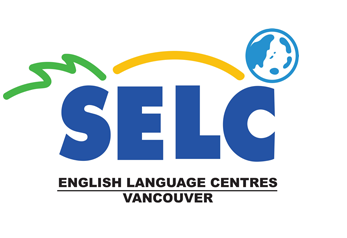
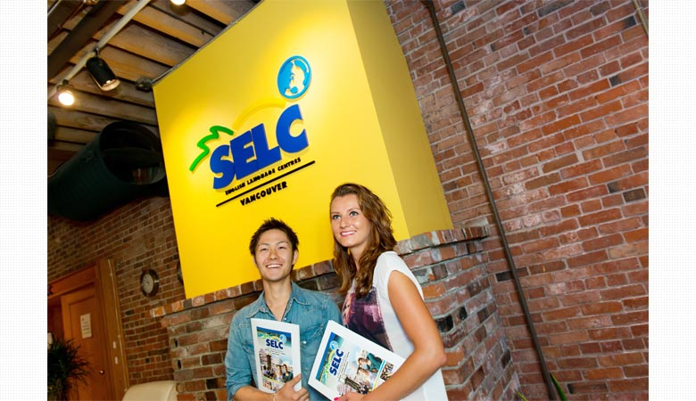
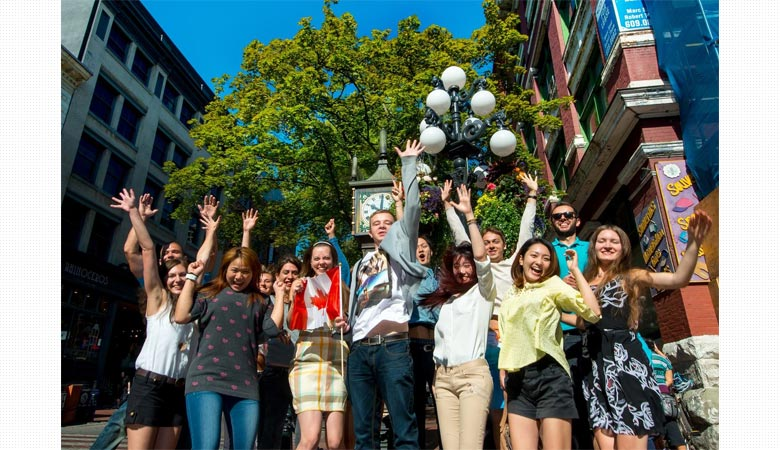
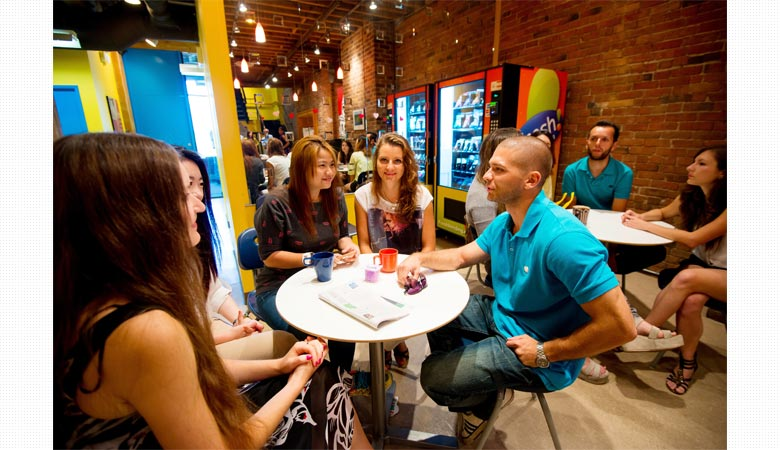
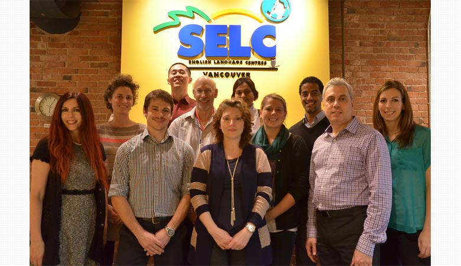
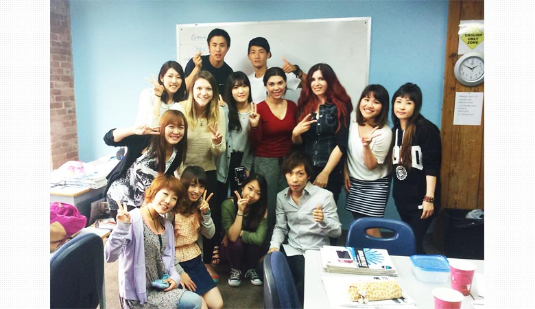

 【カナダ / バンクーバー】
基本的な英語だけでなくカフェ英語やインターンなどにも挑戦できる。
SELC Canada / セルク カナダSELC English Language Centre Canada (セルク・イングリッシュ・ラングエッジ・センター・カナダ)


SELC English Language Centre Canada (セルク・イングリッシュ・ラングエッジ・センター・カナダ)
基本的な英語だけでなくカフェ英語やインターンなどにも挑戦できる。
基本的な英語だけでなくカフェ英語やインターンなどにも挑戦できる。

ロケーション
ショッピングやバンクーバーのありとあらゆる距離にあるので、新たな留学生活をスタートさせるのに最高の場所となるでしょう。
ショッピングやバンクーバーのありとあらゆる距離にあるので、新たな留学生活をスタートさせるのに最高の場所となるでしょう。

自然とEnglish Only Policyが守られる環境
SELCには自ら英語漬けの日々を送ろうという意識高い学生達が集まっているので、
キャンパスでの生活は自然と英語だけの環境になっています。
SELCには自ら英語漬けの日々を送ろうという意識高い学生達が集まっているので、
キャンパスでの生活は自然と英語だけの環境になっています。

アットホームでフレンドリーなサポート
全てのスタッフと講師は一人ひとりの学生の情報を共有し、学習面や生活面での相談にも親身に答えてくれます。
全てのスタッフと講師は一人ひとりの学生の情報を共有し、学習面や生活面での相談にも親身に答えてくれます。

SELCならではのワーホリスペシャル
英語を使った仕事にチャレンジして実践的な英語を身につけ、
他では出来ない体験で人として成長できる絶好のチャンスを提供します。
英語を使った仕事にチャレンジして実践的な英語を身につけ、
他では出来ない体験で人として成長できる絶好のチャンスを提供します。
「グローバル塾」でもっと自分を成長させる
北米生活25年の校長自ら講義を行い、語学学校に通うだけでは身に付けられない英語力、
グローバル人材となるためのヒントをお伝えします。
北米生活25年の校長自ら講義を行い、語学学校に通うだけでは身に付けられない英語力、
グローバル人材となるためのヒントをお伝えします。
ニーズに合わせた授業スケジュール
コミュニケーションに重点を置き、発音矯正やリスニング＆スピーキングなど
日本人が苦手とする部分を自分のレベルに合わせて受講できます。
コミュニケーションに重点を置き、発音矯正やリスニング＆スピーキングなど
日本人が苦手とする部分を自分のレベルに合わせて受講できます。
＜現地スタッフからのコメント＞
英語力を本気で高めたい学習意欲の高い学生が集まることに加え、全スタッフによる成果を上げることにフォーカスした強力なサポートによってモチベーションの高い環境が保たれている。またワーホリスペシャルを利用して、アルバータ州のリゾートホテルでの就労や、バリスタプログラム受講後にローカルカフェでの就労などカナディアンの現地コミュニティに入り込んでいくミニプロジェクトを用意。学校での英語力向上だけでなく様々な経験を通して自分自身を成長させ、それぞれのオリジナルストーリーを作ることができます。皆様にお会いできることを楽しみにしております！
自然とEnglish Only Policyが守られる環境
SELCには自ら英語漬けの日々を送ろうという意識高い学生達が集まっているので、キャンパスでの生活は自然と英語だけの環境になっています。
アットホームでフレンドリーなサポート
全てのスタッフと講師は一人ひとりの学生の情報を共有し、学習面や生活面での相談にも親身に答えてくれます。
SELCならではのワーホリスペシャル
英語を使った仕事にチャレンジして実践的な英語を身につけ、他では出来ない体験で人として成長できる絶好のチャンスを提供します。
「グローバル塾」でもっと自分を成長させる
北米生活25年の校長自ら講義を行い、語学学校に通うだけでは身に付けられない英語力、グローバル人材となるためのヒントをお伝えします。
ニーズに合わせた授業スケジュール
コミュニケーションに重点を置き、発音矯正やリスニング＆スピーキングなど日本人が苦手とする部分を自分のレベルに合わせて受講できます。